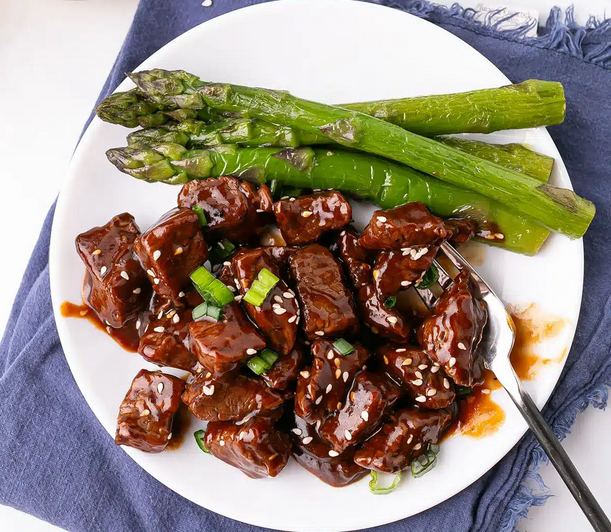

Honey Garlic Steak Bites

Description
The perfect combination of sweet and savory.
Using simple ingredients to recreate rich, authentic
Asian-inspired flavors makes for a delightful choice
for both special occasions and the average weeknight
dinner.
Ingredients
- 2 pounds beef (cut into 1-inch cubes)
- 2 Tablespoon sesame oil
- 1 Tablespoon olive oil
- 4 garlic cloves (minced)
- 1/4 cup honey
- 1/2 cup ketchup
- 1/3 cup soy sauce
- 1/2 teaspoon dried oregano
- 1/2 cup water
- 1 Tablespoon cornstarch (dissolved in
a tablespoon of tap water)
Instructions
- In a large skillet, heat sesame oil on medium
high heat and add beef cubes.
Brown for about 2 minute each side or until
seared and browned nicely. Work in batches
if necessary and do not crowd the pan.
- Remove from pan and set aside
- Lower heat to medium, add olive oil, and saute
garlic until fragrant about 30 seconds.
-
Add soy sauce, honey, ketchup, and water. Mix well.
-
Stir in cornstarch slurry then add beef,
reduce heat and continue to cook for 4-5 minutes,
until sauce thicken.
-
Serve hot garnished with sesame seeds or
chopped green onions.
Notes
See the original recipe
Here